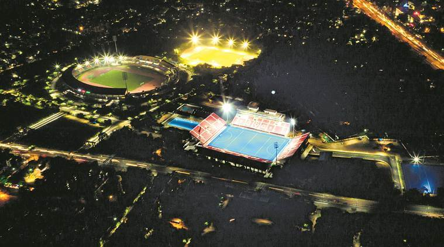

Bhubaneswar

Bhubaneswar is the capital and largest city of the Indian state of Odisha. The region, especially the old town, was historically often depicted as Ekamra Khetra (area (kshetra) adorned with mango trees (ekamra)). Bhubaneswar is dubbed the "Temple City" a nickname earned because of the 700 temples which once stood there. In contemporary times, it has emerged as an education hub and an attractive business destination.
Although the modern city of Bhubaneswar was formally established in 1948, the history of the areas in and around the present-day city can be traced to the 7th century BCE and earlier. It is a confluence of Hindu, Buddhist and Jain heritage and includes several Kalingan temples, many of them from 6th–13th century CE. With Puri and Konark it forms the 'Swarna Tribhuja' ("Golden Triangle"), one of eastern India's most visited destinations.
Thank You